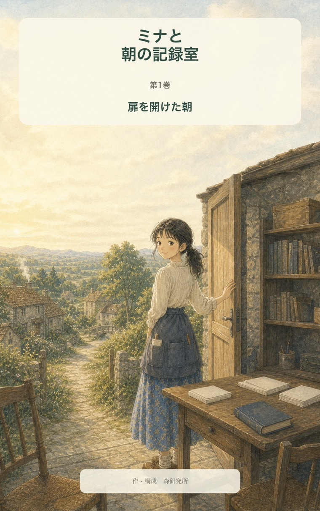
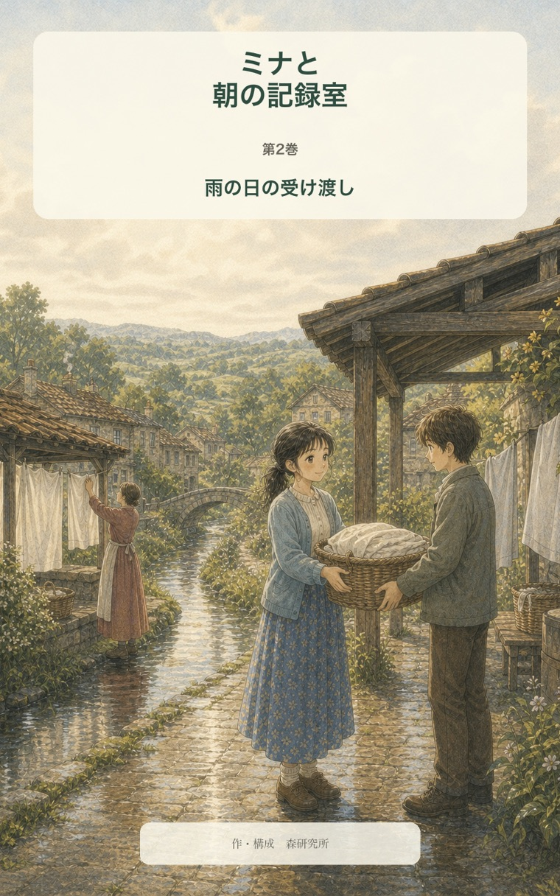

ミナと朝の記録室 — 仕事編
初めての仕事。
失敗した日。
誰かに仕事を渡す日。
ミナの物語は、
働き始めてからも続きます。
最初の一冊 / 仕事編 01
ミナと朝の記録室
扉を開けた朝
暮らしの記録室で働き始めたミナが、最初の失敗と判断を通して、人の言葉が戻ってこられる記録を探す仕事編第1巻。
第1巻の価格・購入方法をAmazonで見る現在の価格や購入方法は、Amazonの商品ページでご確認ください。

最初の一冊は『扉を開けた朝』から。

その続きへ / 仕事編 02
ミナと朝の記録室
雨の日の受け渡し
雨の日の共同干し場をめぐる相談から、紙には見えなかった誰かの一日を知り、自分一人で抱えずに仕事を渡すことを覚える第2巻。
第2巻をAmazonで見る